Flatcar
Automatic updates of Flatcar worker nodes
iMKE provides the functionality to keep the operating system of Flatcar based worker nodes up to date. This feature will automatically install any updates released by the upstream vendor (Kinvolk) for Flatcar on the worker nodes.
The auto-update feature uses FLUO, the Flatcar Linux Update Operator in the background. When a reboot is needed after updating the system, it will drain the node before rebooting it. It coordinates the reboots of multiple nodes in the cluster, ensuring that only one node is rebooting at once.
Using the auto-update functionality is enabled by default. The following screenshot shows the creation of a machine deployment with auto-updater enabled:
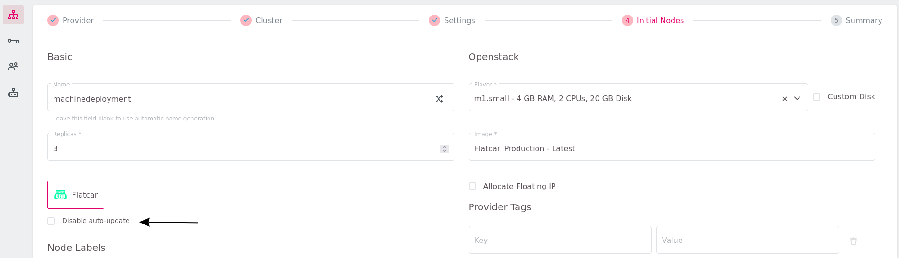
If you would like to take care of OS updates (and the reboots) yourself, it is possible to disable the automatic updates of the worker nodes by selecting the Disable auto-update checkbox:
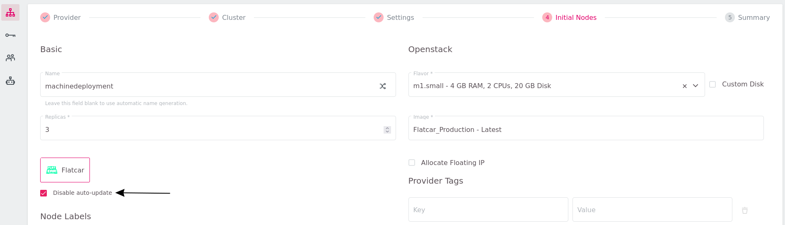
We highly encourage our users to use the auto-update feature to keep your infrastructure safe.
Checking the state of the auto-updater
To check if your nodes receive automatic OS-updates, click on the machine deployment:
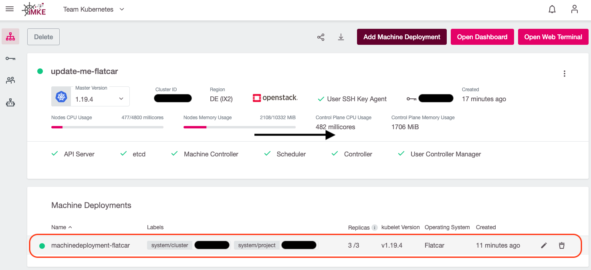
and check if the Disable auto-update option has a green checkmark in front of it (auto-updater is off):
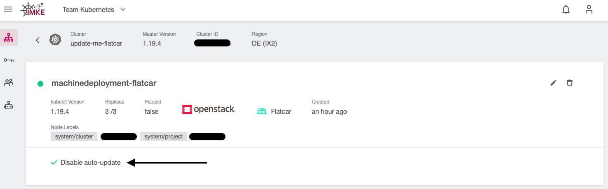
or if it’s greyed out (auto-updater is on):
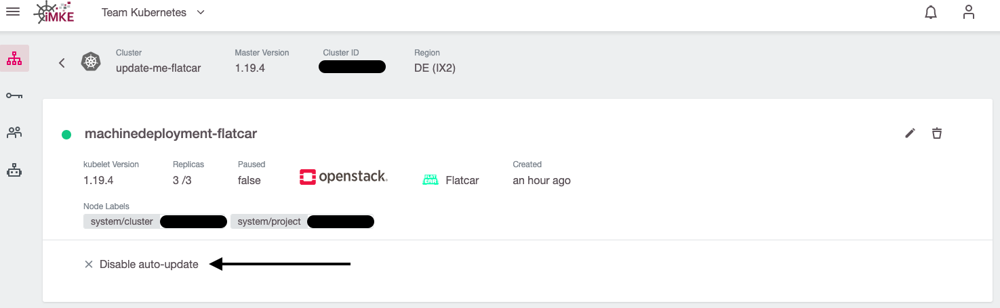
Enabling/disabling auto-updater on an existing machine deployment
To change the status of the auto-updater, click on the edit button of the machine deployment:
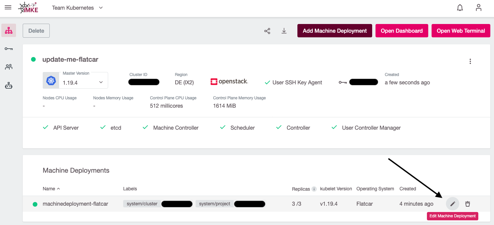
and (de)-select the checkbox accordingly:
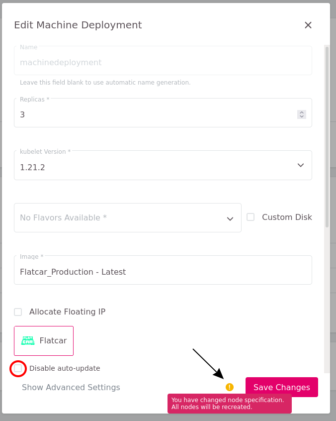
After clicking on Save Changes, all worker nodes will perform a rolling update and reboot.
Update Flatcar Worker-Nodes manually
To update a Flatcar worker node manually, access via SSH is required.
You can find out the actual installed OS version from /etc/os-release:
$ grep VERSION_ID /etc/os-release
VERSION_ID=2765.2.2
In the next step we’ll unmask and start the systemd unit update-engine:
$ sudo systemctl unmask update-engine.service
Removed /etc/systemd/system/update-engine.service.
$ sudo systemctl start update-engine.service
Now we can check for available updates and install them:
$ sudo update_engine_client -check_for_update
$ sudo update_engine_client -status
The Update-Engine client will now download the latest available release of Flatcar and adjusts the boot order automatically so that the new release will be activated at the next boot.
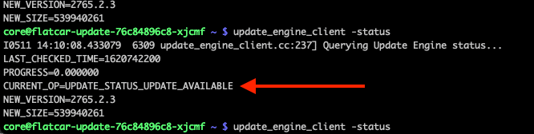
As soon as the status has changed from UPDATE_STATUS_UPDATE_AVAILABLE to UPDATE_STATUS_DOWNLOADING, and then to UPDATE_STATUS_UPDATED_NEED_REBOOT, we can now reboot the worker node and repeat the steps for all nodes in the machine deployment.
$ sudo systemctl reboot
We highly recommend using the auto-updater feature, in order to ensure the security and integrity of your infrastructure.
Ubuntu
Ubuntu support got removed in July 2021. Read here how to update to supported Flatcar OS for existing machine deployments
Update to Flatcar
To update from Ubuntu to Flatcar click on the edit button of the machine deployment
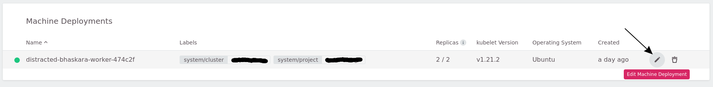
Then click on the flatcar logo
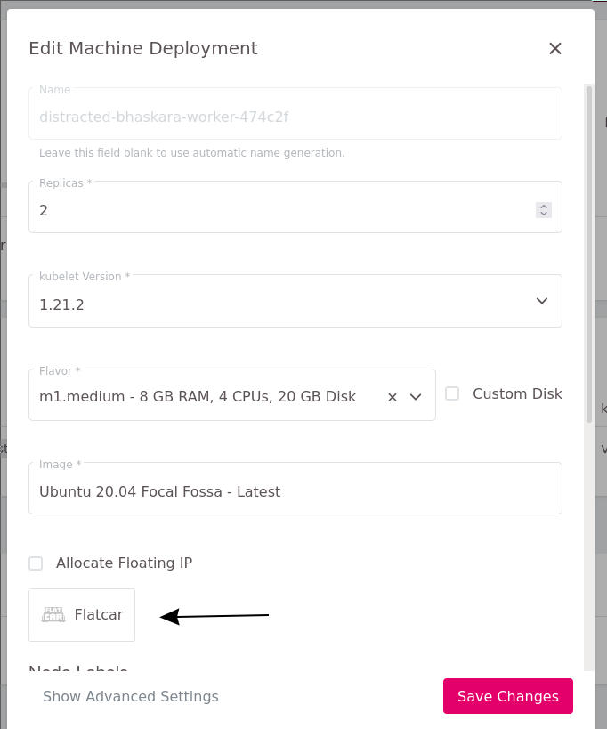
It changed the Image and enabled the auto-update feature.
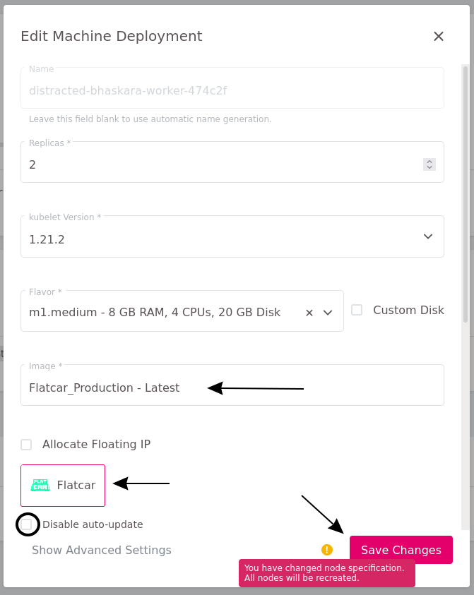
The node will now be recreated, and your cluster is up-to-date.
Summary
In this guide you’ve learned the following:
- What the auto-update feature is
- How to enable and disable the auto-update feature for a Flatcar machine deployment
- How to apply the updates on a Flatcar worker node manually
- How you can enable the automatic reboots of Ubuntu-based worker nodes
Further reading